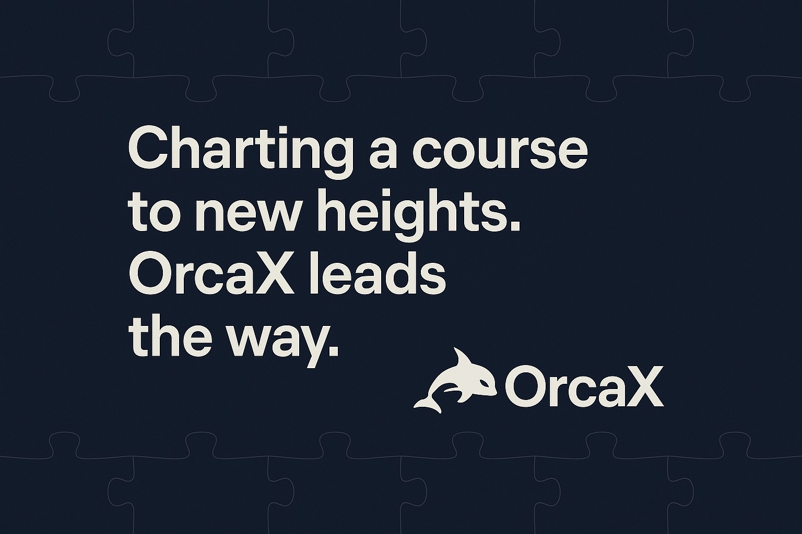

세상이 OrcaX를 주목하는 그 순간까지
지금까지의 항해는 준비와 동행, 그리고 의지의 과정이었습니다.
그러나 그 모든 여정의 다음은
세상과 만나는 접점,
바로 시장(Mainnet)이라는 이름의 현실입니다.
우리가 만든 퍼즐,
우리가 품은 비전,
우리가 세워온 공동체의 힘은
이제 세상의 시선 앞에 놓일 준비를 마쳤습니다.
OrcaX는 DEX 상장,
실물자산 연결 RWA,
진정성 있는 투명한 구조로
더 이상 상상이나 약속이 아닌 실행의 플랫폼이 되어 나아갑니다.
